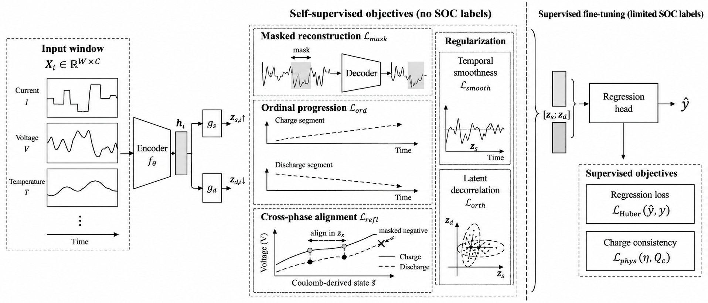
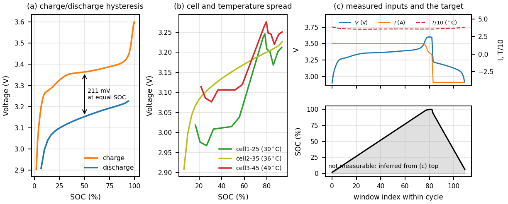
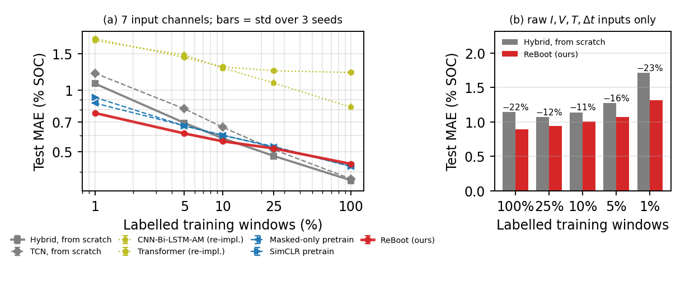
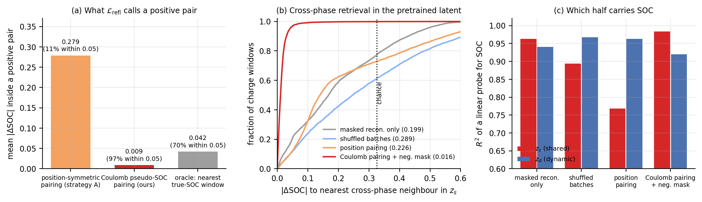
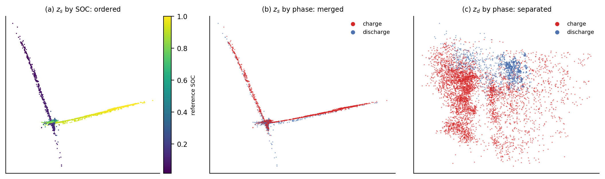
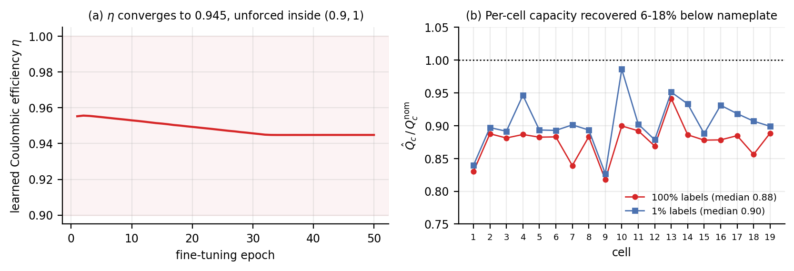
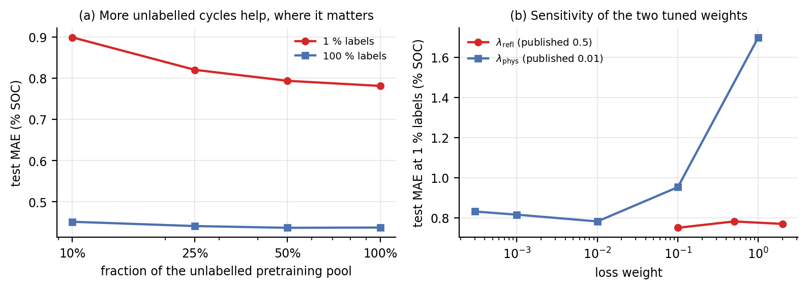
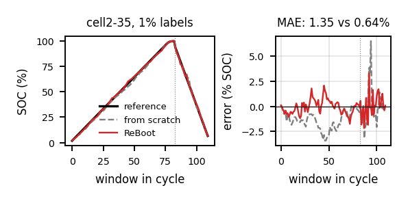
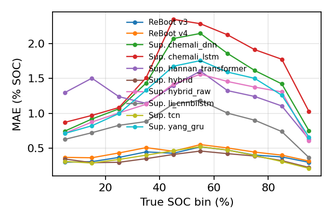

Abstract
Accurate state-of-charge (SOC) estimation is essential for battery management, but data-driven models typically require densely labelled SOC trajectories that are difficult to obtain outside controlled laboratory conditions. We propose ReBoot, a physics-structured self-supervised pretraining framework for label-efficient SOC estimation from multivariate battery time series. ReBoot exploits two forms of label-free structure: monotonic SOC progression within charge and discharge segments, and cross-phase correspondence between windows at similar charge states despite hysteresis and phase-dependent dynamics. Pretraining combines an ordinal progression objective, cross-phase representation alignment, and masked signal reconstruction. Cross-phase pairs are constructed from a Coulomb-derived state coordinate used only during pretraining. On 19 cells spanning three temperatures and 2.9 M windows, ReBoot reduces test MAE by 28 % with 1 % labelled data and 11 % with 5 %, relative to the identical encoder trained from scratch. Using only raw I, V, T, Δt inputs, pretraining improves the same encoder across all label fractions by 12–23 %. Ablations identify cross-phase alignment as the dominant structured objective in the low-label regime.
vs. same encoder from scratch
with raw inputs only
(0.327 at chance)
19 LFP cells, 3 temperatures

Why SOC is hard, and what is free
The supervision is expensive; the structure is not.
Reference SOC cannot be measured directly — it is obtained by Coulomb-counting a carefully instrumented cell, which is why densely labelled trajectories exist only for cells someone has already paid to characterise. Current, voltage and temperature logs, by contrast, accumulate for free on every cell that is ever cycled. The question is what can be learned from the logs alone.

ReBoot's answer is that a battery trajectory carries two label-free constraints that no generic time-series pretext task encodes:
SOC is monotone inside a phase
Within one continuous charge or discharge segment, SOC can only move one way. A margin ranking loss on a scalar read-out of the shared latent turns that into supervision, with no label and no assumed rate.
The two phases visit the same states
A charging cell and a discharging cell pass through the same charge states by different routes. Aligning those states across phases is what forces the representation to encode SOC rather than the operating mode — if you can tell which windows correspond.
Charge is conserved
Between consecutive windows, the predicted SOC change should match what the measured current moved, up to a Coulombic efficiency and a cell capacity. Both are left learnable, and both converge to physically plausible values.
Results
The benefit is concentrated exactly where labels are scarce.

| Model | 100 % | 25 % | 10 % | 5 % | 1 % |
|---|---|---|---|---|---|
| Supervised, from scratch | |||||
| TCN | 0.369 | 0.513 | 0.658 | 0.810 | 1.208 |
| Hybrid (ReBoot encoder) | 0.363 | 0.477 | 0.581 | 0.692 | 1.076 |
| Published SOC architectures, re-implemented | |||||
| DNN | 1.396 | 1.933 | 2.095 | 2.244 | 2.488 |
| LSTM-RNN | 1.593 | 1.734 | 1.859 | 1.975 | 2.278 |
| GRU-RNN | 1.226 | 1.442 | 1.745 | 1.852 | 2.178 |
| Transformer | 1.219 | 1.242 | 1.298 | 1.444 | 1.781 |
| CNN-Bi-LSTM-AM | 0.825 | 1.082 | 1.281 | 1.483 | 1.743 |
| Self-supervised baselines, same encoder (100 ep.) | |||||
| Masked reconstruction | 0.425 | 0.527 | 0.602 | 0.670 | 0.864 |
| SimCLR-style contrastive | 0.424 | 0.531 | 0.601 | 0.669 | 0.922 |
| ReBoot | |||||
| Position-based pairing | 0.393 | 0.478 | 0.536 | 0.600 | 0.813 |
| Coulomb pairing + mask (200 ep.) | 0.436 | 0.519 | 0.562 | 0.614 | 0.773 |
| Raw I, V, T, Δt only | |||||
| Hybrid, from scratch | 1.141 | 1.068 | 1.139 | 1.275 | 1.713 |
| ReBoot (100 ep.) | 0.890 | 0.943 | 1.008 | 1.074 | 1.313 |
Test MAE in percentage points of SOC. Input sets differ across groups; bold marks the best result within the matched 7-channel comparison. The full set of 145 evaluation runs, with RMSE, P95/P99, R² and per-phase, per-temperature, per-cell and per-decile breakdowns, is on the results page.
Ablation
| Variant (100-epoch pretraining) | 100 % | 1 % |
|---|---|---|
| Full ReBoot | 0.438 | 0.781 |
− cross-phase alignment (L_refl) | 0.444 | 0.921 |
− ordinal progression (L_ord) | 0.436 | 0.798 |
− charge consistency (L_phys) | 0.414 | 0.817 |
| Single latent | 0.450 | 0.758 |
| Masked reconstruction only | 0.425 | 0.864 |
| SimCLR-style | 0.424 | 0.922 |
| Full ReBoot, 200 ep. | 0.434 | 0.773 |
Removing cross-phase alignment is by far the most damaging single change at 1 % labels (+18 %), and neither generic self-supervised objective accounts for the gain under a matched budget.
Does the claimed mechanism actually fire?
The accuracy table cannot distinguish "contrastive pretraining is a good regulariser" from "cross-phase alignment is being learned". The latent space can.


z_s orders SOC monotonically and places charge and discharge windows
on the same arms of the manifold — what L_ord and L_refl ask for.
z_d, which no alignment term touches, is where the phase separates.

Full supporting-evidence page →
Qualitative


What this does not claim
- It is not a full-supervision result. The crossover against training from scratch lies between 10 % and 25 % labels; above it, the supervised control wins.
- It is not domain adaptation. Under cross-cell and later-life shift, ReBoot sits within ±2 % of the supervised control. Label efficiency and distribution shift are different problems.
- The factorisation is not the source of the accuracy. A single-latent variant matches it at 1 % labels. The split is the coordinate system the objectives are defined on, and the latent-space evidence shows it behaves as designed — but the paper does not credit it with the gain.
- Verified alignment did not translate monotonically downstream. The Coulomb-paired model has a 20× better retrieval gap than the position-paired one, yet wins only at 1 % labels. Both rows are reported.
Reproducing
The committed Hydra defaults are the published recipe; the overrides below are only what differs from them.
git clone https://github.com/mtliba/reboot.git && cd reboot
uv venv && uv pip install -e ".[dev]"
pytest -q # one test per loss, CPU-only, no data needed
# Stage 1 — pretraining, no labels (~9 h on 2x A100)
python scripts/pretrain.py trainer.max_epochs=200 trainer.precision=32 \
pretrain.batch_size=2048 pretrain.batch_sampler=cycle \
data.pair_strategy=soc_proxy pretrain.refl_neg_mask_eps=0.05
# Stage 2 — fine-tune on 1 % of the labels, then evaluate
python scripts/finetune.py "finetune.pretrained_ckpt='<ckpt>'" finetune.label_fraction=0.01
python scripts/evaluate.py "+eval.ckpt='<ckpt>'" +eval.protocol=per_cell_random
# Rebuild every figure on this page from the committed artefacts
python scripts/make_evidence_figures.pyThe repository ships the per-run evaluation metrics behind every table, the learned physics parameters, and 12 k held-out windows embedded by each pretrained encoder, so the latent-space analysis above can be recomputed without a GPU. The battery measurements themselves belong to the dataset authors and are not redistributed; a synthetic generator with the same schema lets the whole pipeline and all tests run without them. See the reproduction guide.
BibTeX
This paper is under review and has not been accepted or published. Please cite it as an unpublished manuscript; this entry will be updated if and when it appears.
@unpublished{tliba2026reboot,
title = {Physics-Structured Self-Supervised Pretraining for
Label-Efficient Battery State-of-Charge Estimation},
author = {Tliba, Marouane and Arbaoui, Slimane and Taifour, Youssra and
Kerkouri, Mohamed Amine and Zitouni, Marwa and Aburaed, Nour and
Beghdadi, Azeddine and Chetouani, Aladine and Mesbahi, Tedjani},
year = {2026},
note = {Manuscript submitted to IEEE ICASSP 2027}
}The cells are the LFP cycling campaign of Arbaoui et al., Spiking neural networks for accurate and efficient state of health estimation of lithium-ion batteries across varying temperatures, IEEE Open Journal of Vehicular Technology 7:510–522, 2026. Parts of the overview figure were visually refined from an author-designed scientific schematic; the scientific content and final verification are the authors'.